CRVI000785Angelo Testa and Paul Rand - IBM (Furnishing fabric)
Linen · 304.8 × 132.1 cm · late 1950s
Linen · 304.8 × 132.1 cm · late 1950s
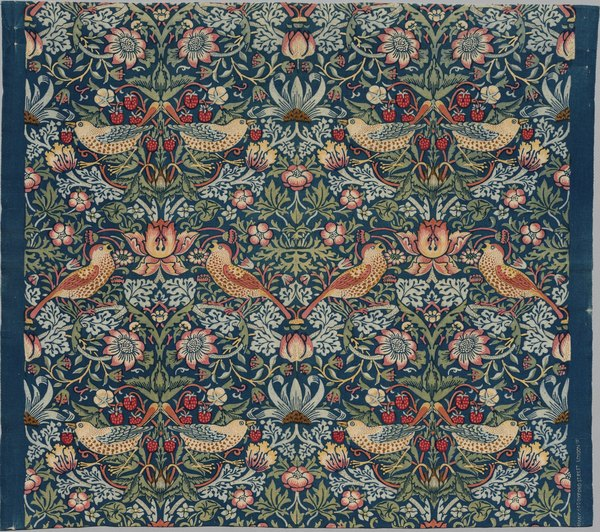
CRVI001458William Morris - Strawberry Thief
Textile · c. 1936
Textile · c. 1936
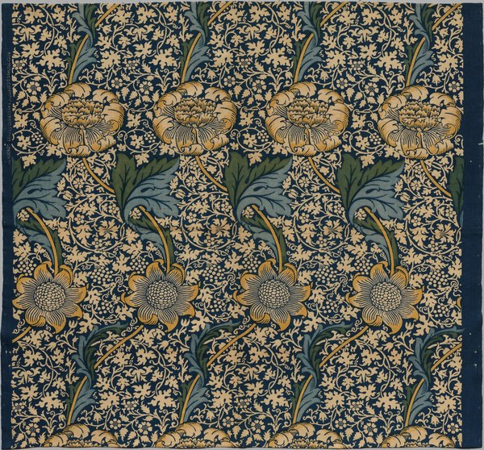
CRVI001459William Morris - Kennet
Textile · c. 1920
Textile · c. 1920
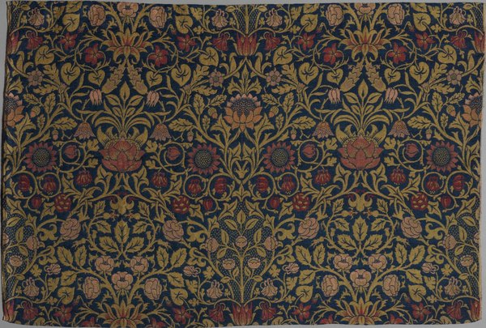
CRVI001460William Morris - Violet and Columbine
Textile · 1883
Textile · 1883
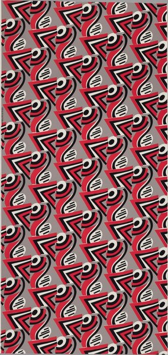
CRVI001719Sonia Delaunay - Jazz
Dress or furnishing fabric · 1977 (designed 1920)
Dress or furnishing fabric · 1977 (designed 1920)
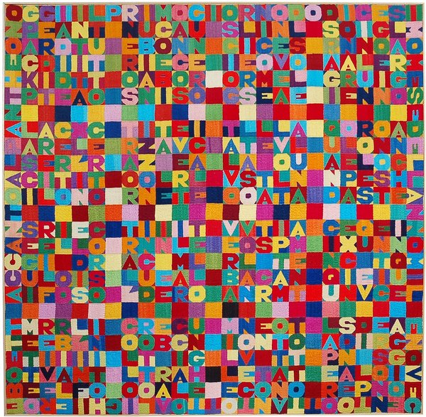
CRVI001890Alighiero Boetti - Embroidered word square
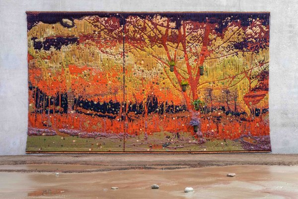
CRVI002004Otobong Nkanga - Unearthed – Sunlight
2021
2021
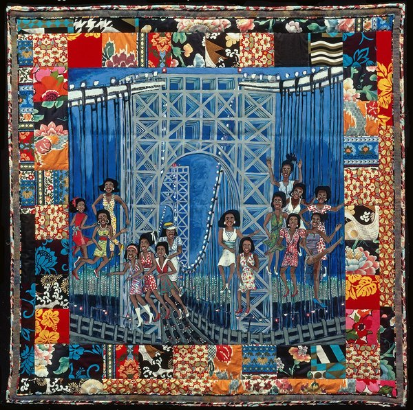
CRVI002123Faith Ringgold - Dancing on the George Washington Bridge
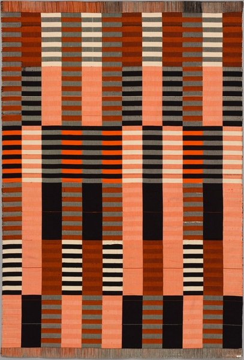
CRVI002220Anni Albers - Wall hanging
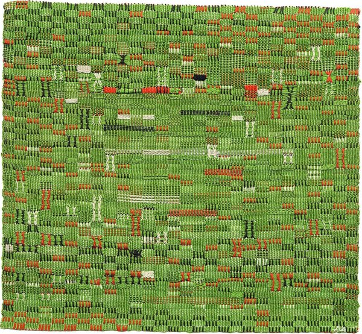
CRVI002223Anni Albers - Pasture
1958
1958
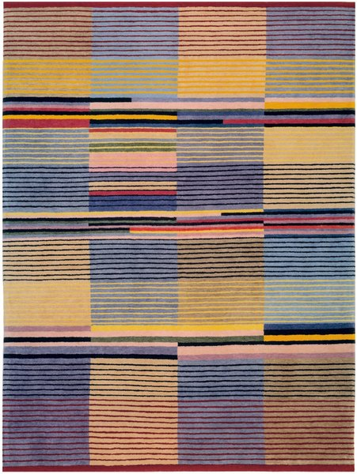
CRVI002236unattributed - Bauhaus weaving, banded stripes in blue, apricot and black
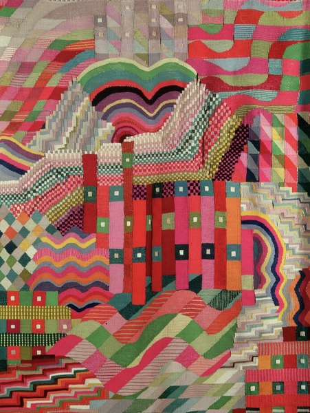
CRVI002238Gunta Stölzl - Jacquard weaving